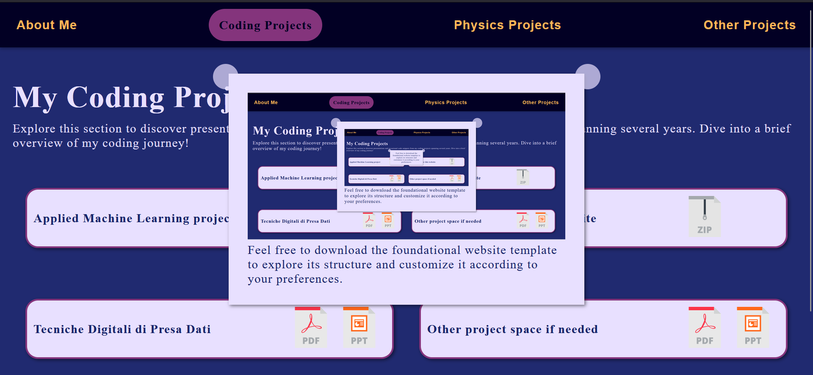
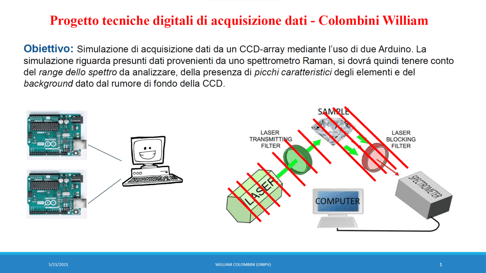

The aim of the project was to analyze a given dataset and find the best classification algorithm in order to distinguish "good data" from "bad data". For the matlab code contact me (soon avaiable on GitHub). During the wait, you can download the presentation that provides an overview of the various steps and the work done to complete the task.

Feel free to download the foundational website template to explore its structure and customize it according to your preferences.

The project was developed using programming languages such as C, C#, and C++. It involved simulating a sensor with an Arduino, which transmitted data based on the Arduino's physical setup to a computer console. The computer then collected and analyzed this data in real-time. The project start with the decision of a structure for the data sent and explore the field of IRT data collection. For the code contact me (soon avaiable on GitHub).